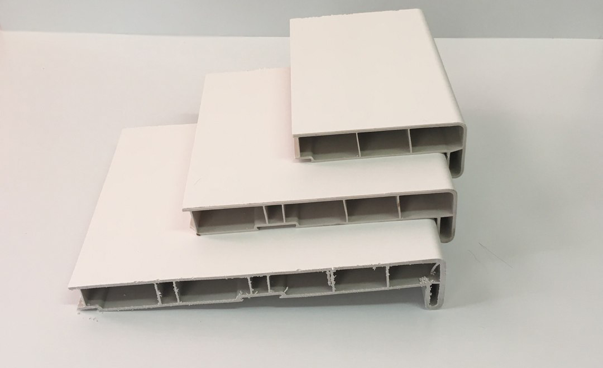
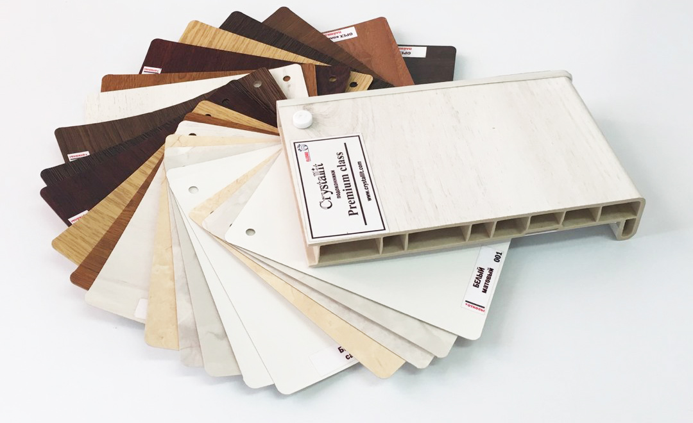
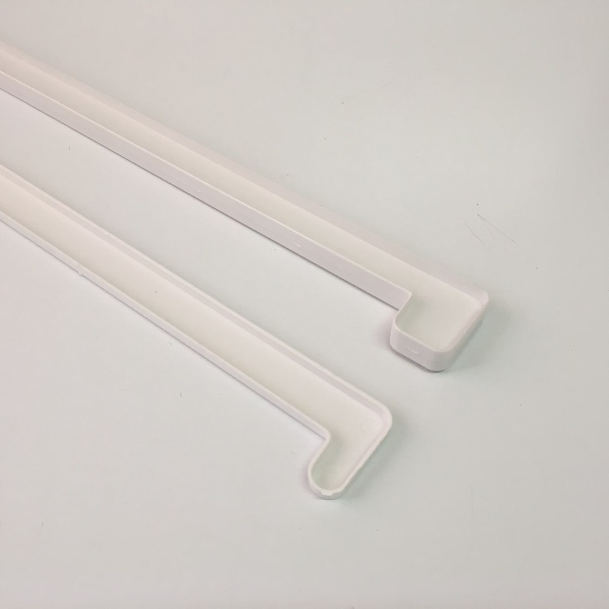

Подоконники

Подконники "Elex". Россия. Ширина от 100 до 600 мм - в наличии. Ширина от 650 до 800 мм - под заказ. Сроки поставки 2-3 дня.Продается хлыстами (6 метров) и в нарез(по вашим размерам).

Подоконники "Cristallit". Россия. Под заказ. Ширина от 100 мм до 600 мм. Сроки 2 дня. Продается хлыстами (6 метров) и в нарез(по вашим размерам).

Заглушки для подоконников. Для "Elex" - длина 600 мм. Для "Cristallit" - длина 700 мм.
Также есть соединительные заглушки (стыковочные).